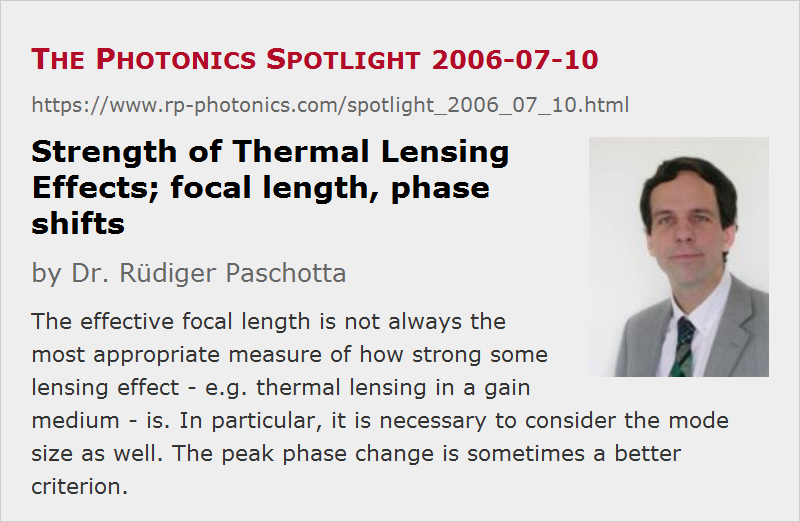

Strength of Thermal Lensing Effects
Posted on 2006-07-10 as a part of the Photonics Spotlight (available as e-mail newsletter!)
Permanent link: https://www.rp-photonics.com/spotlight_2006_07_10.html
Author: Dr. Rüdiger Paschotta, RP Photonics Consulting GmbH
Abstract: The effective focal length is not always the most appropriate measure of how strong some lensing effect - e.g. thermal lensing in a gain medium - is. In particular, it is necessary to consider the mode size as well. The peak phase change is sometimes a better criterion.

It may seem quite trivial: if you are dealing with some lensing effect – e.g. with thermal lensing in a laser gain medium – you can quantify this with an effective focal length. The smaller that is, the stronger the lensing effect.
However, consider a Nd:YAG laser, where the laser rod has a certain focal length for a given pump power. It turns out that in a simplified situation, where the thermal lensing results only from the temperature dependence of the refractive index, the effective focal length depends only on the pump power density (more precisely on the dissipated power per unit of pumped area), but not on the total pump power. So you might expect that you could easily double the pump power together with the mode area, and lensing effects would not become stronger, right? If this were true, we would be dealing with a power-scalable laser architecture.
The caveat is that a larger resonator mode becomes more sensitive to lensing effects. In particular, the width of the stability zones of the laser resonator, quantified with respect to the inverse effective focal length, scales in inverse proportion to the mode area. So it becomes more and more delicate to operate the laser within such a stability zone, as the mode area is increased.
Apparently, the focal length is not sufficient to judge how strong a lensing effect really is. To understand this, consider the radially varying phase changes related to the lensing effect. There is a term proportional to the radius squared in the phase expression, with the coefficient being inversely related to the focal length. Now, the larger the laser beam, the stronger are the corresponding phase changes within the beam area.
In conclusion, in some situations it is more appropriate to quantify a lensing effect based on the maximum phase change within the mode area. May one test this e.g. in the context of a thin disk laser, where the maximum phase change via thermal lensing depends only on the pump intensity (again with certain simplifying assumptions), so that in this case power scaling is indeed possible. This advice also applies to higher-order phase distortions, as are related e.g. to aberrations of the thermal lens: you can always remove the quadratic distortions by applying an appropriate correction lens, but the higher-order distortions remain.
This article is a posting of the Photonics Spotlight, authored by Dr. Rüdiger Paschotta. You may link to this page and cite it, because its location is permanent. See also the RP Photonics Encyclopedia.
Note that you can also receive the articles in the form of a newsletter or with an RSS feed.
Questions and Comments from Users
Here you can submit questions and comments. As far as they get accepted by the author, they will appear above this paragraph together with the author’s answer. The author will decide on acceptance based on certain criteria. Essentially, the issue must be of sufficiently broad interest.
Please do not enter personal data here; we would otherwise delete it soon. (See also our privacy declaration.) If you wish to receive personal feedback or consultancy from the author, please contact him e.g. via e-mail.
By submitting the information, you give your consent to the potential publication of your inputs on our website according to our rules. (If you later retract your consent, we will delete those inputs.) As your inputs are first reviewed by the author, they may be published with some delay.
|  |
If you like this page, please share the link with your friends and colleagues, e.g. via social media:
These sharing buttons are implemented in a privacy-friendly way!